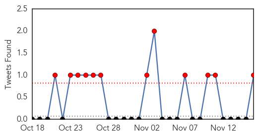

30 Day Trends
Web: 0 alerts, 0 warnings
Twitter: 12 alerts, 0 warnings
Top Articles:
- 0.995
- Dengue outbreak demands preventive steps for future
- 0.994
- 101 cases of dengue fever confirmed on Hawaii Island
- 0.992
- Focus on preventive steps to tackle dengue
- 0.978
- Zika virus awareness starts tomorrow
- 0.974
- Zika Virus Reaches the Caribbean
- 0.952
- Ministry Of Health Urges Vigilance As Zika Virus Is Confirmed In The Caribbean
- 0.934
- Sanofi : Pasteur CEO Olivier Charmeil
- 0.909
- Pakistan: 59 fresh dengue cases in Rawalpindi take total to 4,501
- 0.894
- Light at the end of the tunnel
- 0.893
- Tamil Nadu rains may spark health woes
- 0.866
- PM Prayut urges EOCs to ensure people are safe from dengue fever
- 0.752
- El Niño: food shortages, floods, disease and droughts set to put millions at risk
- 0.585
- “You need to make a decision to be proactive”
- 0.543
- Flooded hospitals turn potential dengue-breeding sites in Chennai - India
- 0.508
- Brisbane news, weather, traffic
Top Tweets:
- 0.721
- Flavivirus news: Outbreak of dengue fever still at peak in Kaohsiung - Taipei Times: Outbreak o... https://t.co/22yLgVwlud pathogenposse
Web/News Articles

Tweets
Article Locations

Article Confidences